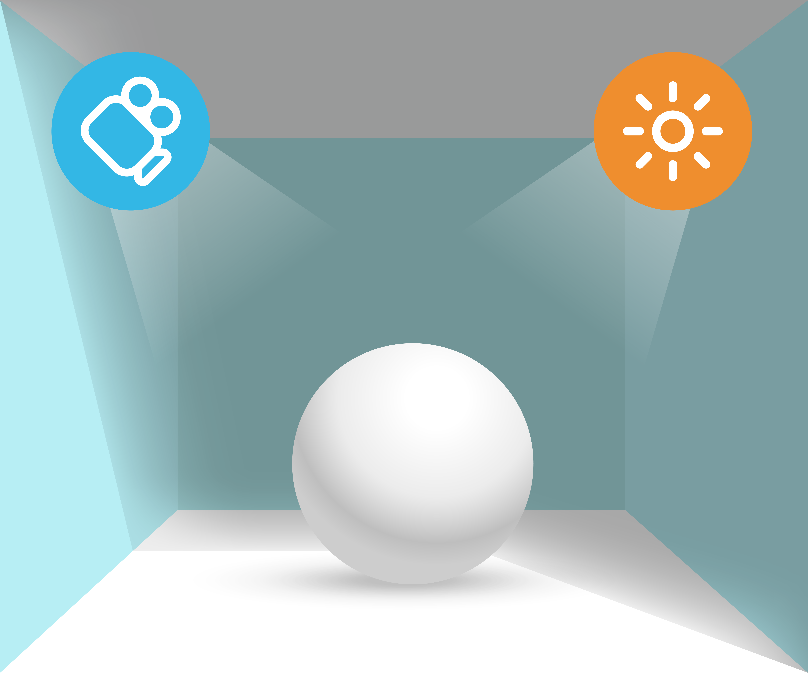
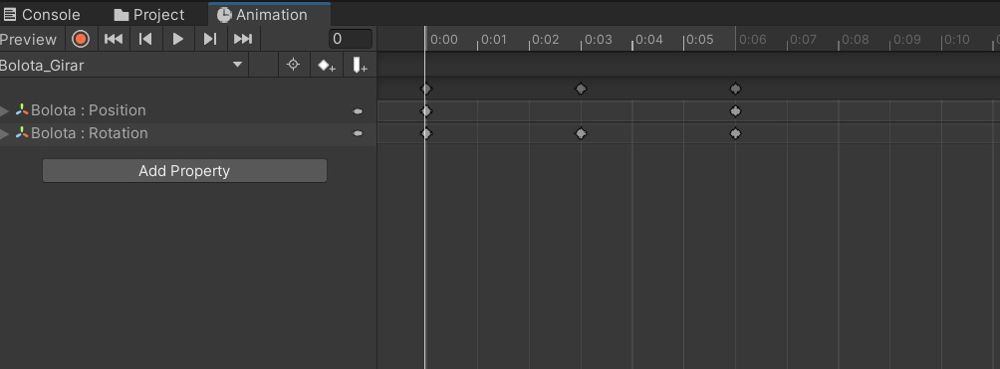
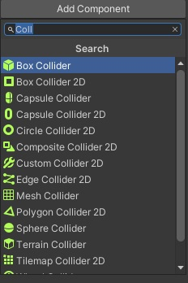
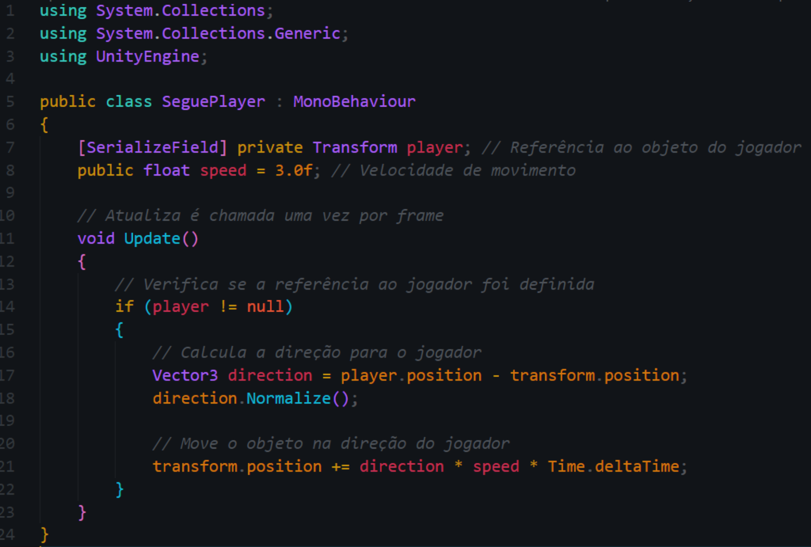
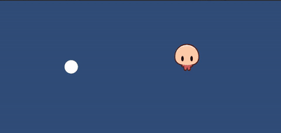
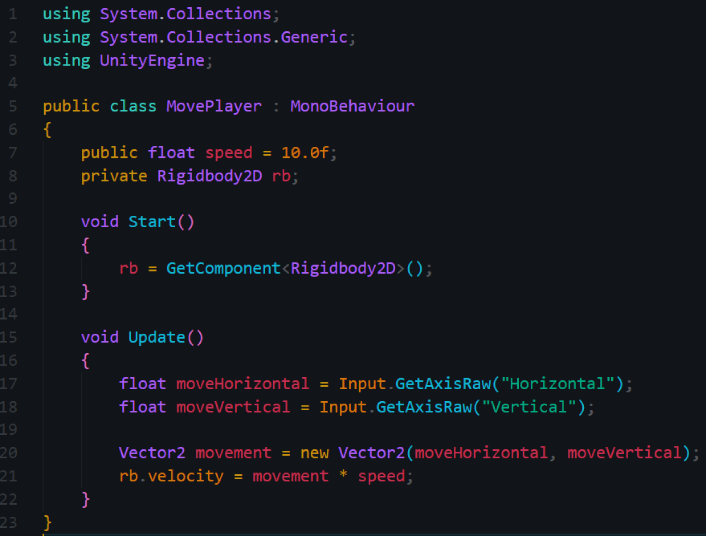
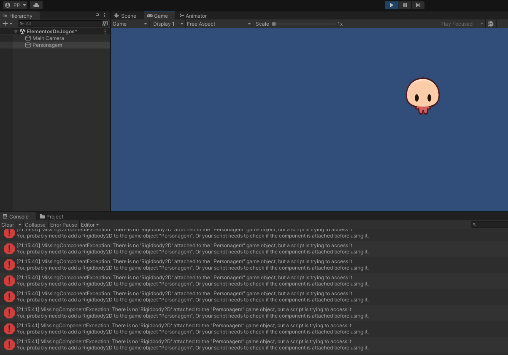

Tamanho da fonte
Vamos iniciar os estudos?
PlayAssista ao vídeo abaixo para uma introdução aos seus estudos
Como usar os elementos de jogos digitais para desenvolver games com qualidade?
No mundo dos jogos digitais, tudo começa com objetos. Eles são os blocos de construção de qualquer jogo. Na Unity, um objeto do jogo pode ser qualquer coisa, desde um personagem, uma árvore, até um simples cubo.
Cada objeto é composto por componentes que definem suas características e comportamentos, como aparência, movimento e interação.
Game Objects são a base de qualquer jogo criado com a Unity. Eles funcionam como os blocos de construção essenciais do seu projeto de jogo, atuando como contêineres para todos os elementos e comportamentos que compõem o jogo.
Cada Game Object pode representar personagens, inimigos, itens coletáveis, cenários, câmeras, luzes, ou qualquer outro componente interativo ou não-interativo do seu jogo.
Embora um Game Object por si só não tenha características visíveis ou comportamentos definidos, ele se torna significativo e funcional através da adição de componentes.
Esses componentes podem variar de simples renderizadores de malha e colisores, que dão forma e interatividade física ao objeto, até scripts complexos que definem o comportamento e a lógica do jogo. Além disso, cada Game Object possui um componente Transform, que determina sua posição, rotação e escala no mundo do jogo.
Em resumo, os Game Objects são a espinha dorsal de qualquer criação na Unity, oferecendo uma estrutura flexível e extensível para construir os mundos interativos e as experiências que definem os jogos modernos.
QUESTÃO 1
O que é um GameObject no Unity?
A animação de Game Objects na Unity é uma faceta poderosa e versátil do desenvolvimento de jogos, permitindo aos criadores dar vida aos seus projetos com movimentos e transformações dinâmicas.
Utilizando o sistema de animação integrado da Unity, os desenvolvedores podem animar praticamente qualquer propriedade de um Game Object, desde sua posição, rotação e escala até parâmetros mais complexos de materiais e luzes.
O processo começa com a criação de Key Frames, que são pontos essenciais na linha do tempo de animação onde as propriedades específicas dos objetos são definidas.
A Unity interpola entre esses Key Frames, criando movimentos suaves e naturais. Isso é particularmente eficaz para animar personagens, objetos em movimento e transformações ambientais, como a alteração da iluminação ou o movimento de câmeras.
Além disso, a Unity oferece a possibilidade de usar animações baseadas em física, que adicionam um nível extra de realismo e reação às interações do jogo. Animações podem ser controladas por scripts para reagir a eventos do jogo, tornando-se uma parte integrante da narrativa e da jogabilidade.
A facilidade de uso e a flexibilidade do sistema de animação da Unity tornam possível para desenvolvedores de todos os níveis de habilidade criar experiências interativas ricas e envolventes.
Seja você um animador experiente ou um novato no mundo do desenvolvimento de jogos, a Unity oferece as ferramentas necessárias para trazer seus Game Objects à vida de maneira criativa e eficaz.
QUESTÃO 2
Verdadeiro ou Falso
Key Frames são pontos específicos em uma linha do tempo de animação que marcam onde uma propriedade de um objeto (como posição, rotação ou escala) deve ser num dado momento, servindo como pilares para criar movimentos animados.
Colisões são uma parte fundamental de quase todos os jogos, pois elas adicionam interatividade e realismo ao ambiente do jogo. No Unity, essa funcionalidade é implementada através do uso de colisores.
Colisores são componentes que podem ser adicionados a qualquer Game Object para definir sua área física para detecção de colisão.
Os colisores no Unity são usados para diversas finalidades, desde prevenir que personagens atravessem objetos sólidos, como paredes e chão, até detectar interações entre objetos, como um jogador coletando um item ou um projétil atingindo um alvo.
A Unity oferece diferentes tipos de colisores, como colisores de caixa (Box Colliders), esfera (Sphere Colliders), cápsula (Capsule Colliders) e colisores de malha (Mesh Colliders), cada um adequado para diferentes tipos de objetos e cenários de jogo.
Quando dois colisores entram em contato no jogo, a Unity pode disparar eventos de colisão. Estes eventos podem ser capturados e manipulados através de scripts, permitindo aos desenvolvedores criar uma variedade de comportamentos, como danos ao personagem, ativação de armadilhas, ou alterações no ambiente.
Além disso, os colisores podem ser configurados para trabalhar com o sistema de física da Unity, permitindo simular forças realistas, como gravidade e impacto.
Um aspecto importante dos colisores é a possibilidade de definir camadas de colisão e regras de interação.
Isso significa que os desenvolvedores podem controlar quais objetos colidem com quais, permitindo uma grande flexibilidade e controle sobre as interações físicas no jogo. Por exemplo, um personagem pode ser capaz de passar por certos objetos, como água, mas não por outros, como paredes sólidas.
Em resumo, os colisores são componentes essenciais na Unity que oferecem uma base para a criação de um mundo de jogo interativo e convincente. Eles são a chave para adicionar profundidade e realismo às interações dentro do jogo, permitindo que os desenvolvedores criem experiências mais envolventes e imersivas para os jogadores.
No universo dos jogos desenvolvidos com a Unity, a interação entre os elementos é uma parte crucial da criação de um ambiente dinâmico e envolvente.
Os objetos no jogo, conhecidos como Game Objects, não operam de forma isolada; eles podem influenciar e ser influenciados por outros objetos de maneiras variadas. Esta interconectividade é alcançada principalmente através do uso de scripts, que são escritos em C# na Unity.

Scripts permitem definir relações complexas e comportamentos interativos entre os Game Objects. Por exemplo, você pode programar um personagem para seguir automaticamente outro, criando uma dinâmica de perseguição ou acompanhamento. Isso é feito através de scripts que ajustam a posição e orientação de um Game Object com base na posição de outro, muitas vezes levando em conta fatores como distância, velocidade e direção.
Além disso, a interatividade pode ser ampliada para responder a ações do usuário, como cliques do mouse ou toques na tela. Por exemplo, um objeto pode ser programado para realizar uma ação específica - como abrir uma porta, ativar um mecanismo, mudar de cor ou emitir um som - quando outro objeto é clicado ou interagido de alguma forma. Isso é frequentemente gerenciado através do sistema de Eventos da Unity, que permite scripts responder a eventos de entrada como cliques do mouse ou toques na tela.
Esses scripts atuam como os "cérebros" dos Game Objects, definindo seu comportamento e como eles interagem uns com os outros dentro do mundo do jogo. Esta capacidade de criar e controlar interações complexas entre objetos é o que torna a Unity uma ferramenta poderosa para desenvolvedores de jogos, permitindo-lhes construir experiências de jogo ricas e imersivas.
Como exemplo, vamos fazer com que um objeto, neste caso um círculo, siga o Player aonde ele for. Para isso, devemos criar um Script que aqui chamamos SeguePlayer.
Ele deve ser vinculado ao objeto que desejamos que siga o Player.
Na Unity, diferentes sistemas de coordenadas são usados para determinar a posição e orientação dos objetos no espaço do jogo. Aqui estão as definições de "World Coordinates", "Local Coordinates" e "Camera Coordinates":
As coordenadas do mundo (World Coordinates) se referem a um sistema de coordenadas global usado para definir a localização de objetos dentro da cena como um todo.
Neste sistema, a posição de um objeto é definida em relação a um ponto de origem global fixo, geralmente o ponto (0,0,0) da cena. Independentemente da posição ou orientação dos pais de um objeto, suas coordenadas mundiais sempre refletem sua posição no contexto mais amplo da cena.
Os elementos de coordenadas são essenciais para posicionar e mover objetos em seu jogo. No Unity, cada objeto tem uma posição definida por coordenadas X, Y e Z. Você pode usar essas coordenadas para mover objetos, rotacioná-los e muito mais.

As coordenadas locais (Local Coordinates) referem-se à posição e orientação de um objeto em relação ao seu objeto pai, se houver.
Em um sistema de coordenadas locais, o ponto (0,0,0) representa a posição do objeto pai, e todas as medidas são feitas a partir desse ponto.
Isso é particularmente útil para objetos que estão ligados a outros objetos, como as mãos de um personagem que se movem em relação ao corpo do personagem.
As coordenadas da câmera (Camera Coordinates) são um sistema de coordenadas que define a posição e orientação dos objetos em relação à câmera.
Este sistema é fundamental para determinar como os objetos são visualizados pela câmera.
A posição de um objeto em coordenadas de câmera afeta como ele aparece na tela, incluindo sua perspectiva, escala e se está dentro do campo de visão da câmera.
Cada um desses sistemas de coordenadas desempenha um papel crucial na definição de como os objetos são posicionados e visualizados dentro de um jogo Unity, permitindo aos desenvolvedores criar mundos ricos e interativos com precisão e controle.
A implementação de física na Unity é uma peça central para adicionar realismo e dinamismo aos jogos. Com um motor de física robusto e versátil, a Unity permite aos desenvolvedores simular comportamentos físicos realistas em objetos, criando experiências de jogo mais imersivas e convincentes.

O motor de física da Unity é, portanto, uma ferramenta poderosa que proporciona aos criadores de jogos a capacidade de infundir seus mundos virtuais com leis físicas convincentes e interações naturais, elevando significativamente o nível de realismo e imersão dos jogos.
No site da documentação da Unity tem um bom material para nos ajudar a simular física em nossos projetos https://docs.unity3d.com/Manual/PhysicsSection.html.
A entrada e saída de dados é como o seu jogo interage com o jogador. No Unity, você pode usar scripts para capturar a entrada do jogador, como cliques do mouse ou pressionamentos de teclas, e usar essa entrada para controlar objetos no jogo. Você também pode usar scripts para exibir dados para o jogador, como pontuação ou mensagens de texto.

As interfaces de entrada e saída de dados na Unity são extremamente versáteis e abrangentes, acomodando uma vasta gama de dispositivos e interações.
O script a seguir exemplifica como acessar as entradas padrão de teclado na Unity para movimentar um personagem:
Este script utiliza as funções Input.GetAxis("Horizontal") e Input.GetAxis("Vertical") para capturar as entradas do teclado (ou de um gamepad) e movimentar o personagem.
O Vector3 armazena a direção do movimento, e transform.Translate é usado para aplicar esse movimento ao personagem, multiplicado pela velocidade e pelo tempo passado desde o último frame, garantindo uma movimentação suave e consistente. Este exemplo demonstra a facilidade com que a Unity permite integrar entradas de dados para criar uma jogabilidade responsiva e intuitiva.
QUESTÃO 3
Verdadeiro ou Falso
No Unity, a entrada e saída de dados é como você se comunica com seu jogo.
As ferramentas de depuração são essenciais para encontrar e corrigir erros em seu jogo. No Unity, você pode usar o console de depuração para ver mensagens de erro e o depurador para pausar seu jogo e inspecionar o estado dos objetos.
A imagem abaixo mostra um erro comum. O programador atribuiu um Script ao Personagem, entretanto, no Script é informado que deve haver um Rigidbody2D. Para consertar, basta que o programador adicione este componente ao personagem.
Com essa ajuda, fica fácil localizar nossos erros. Quando não estiver entendendo a mensagem que o depurador e o console da Unity estiver informando, copie o erro e cole no seu buscador de internet. O importante é dominar essa ferramenta.
A sintaxe é como a gramática da programação. É o conjunto de regras que define como escrever seu código. Na Unity, você provavelmente estará usando C#, que tem sua própria sintaxe.
Logo, é importante que você se familiarize com os termos usados no momento de referenciar os elementos próprios da Unity, alguns são apresentados na tabela a seguir:
| Elemento | Descrição |
|---|---|
| GameObject | Este é o principal tipo de objeto no Unity. Tudo no seu jogo, desde personagens e itens até luzes e câmeras, é um GameObject. Eles podem conter vários componentes que adicionam funcionalidades, como scripts, renderizadores e física. |
| RigidBody | Este é um componente que você pode adicionar a um GameObject para aplicar física realista. Com um RigidBody, o GameObject será afetado pela gravidade e poderá receber forças e torques para se mover de maneira realista. |
| MonoBehaviour | Esta é a classe base para todos os scripts no Unity. Quando você cria um novo script, ele geralmente herda de MonoBehaviour, o que permite que você use funções úteis do Unity, como Start(), Update(), OnCollisionEnter(), etc. |
| GetComponent | Este é um método que você pode usar em um script para acessar outros componentes no mesmo GameObject. Por exemplo, se você tiver um RigidBody em seu GameObject, poderá usar GetComponent<Rigidbody>() para acessá-lo e alterar suas propriedades. |
| GetAxis | Este é um método que você pode usar para obter a entrada do usuário. Por exemplo, você pode usar Input.GetAxis("Horizontal") para obter a entrada do teclado, joystick ou gamepad para movimento horizontal. |
| Vector2 | Esta é uma classe que representa um vetor em 2D. É útil para coisas como movimento e física em jogos 2D. Um Vector2 tem duas coordenadas: x e y. |
| Vector3 | Esta é uma classe que representa um vetor em 3D. É útil para coisas como movimento e física em jogos 3D. Um Vector3 tem três coordenadas: x, y e z. |
QUESTÃO 4
Verdadeiro ou Falso
No Unity, um RigidBody é um componente que você pode adicionar a um GameObject para aplicar animações.
Lembre-se, a prática leva à perfeição. Continue experimentando e aprendendo, e em breve você estará criando seus próprios jogos incríveis!
Nesta aula, mergulhamos no incrível mundo da criação de jogos com a Unity. Começamos com a composição de objetos, aprendendo que tudo em nosso jogo é um objeto e que esses objetos são compostos por componentes. Em seguida, damos vida aos nossos objetos com animação e exploramos o conceito de colisões e colisores. Também discutimos o relacionamento entre os elementos do jogo e como eles interagem entre si.
Aprendemos sobre os elementos de coordenadas, e exploramos os elementos de física que tornam nosso jogo realista (ou não!).
Também discutimos a entrada e saída de dados, como nos comunicamos com nosso jogo. Por fim, mas não menos importante, exploramos as ferramentas de depuração, que são nosso kit de primeiros socorros para encontrar e corrigir erros, e a sintaxe, a qual é a gramática da programação.
Agora, você está equipado com o conhecimento básico para começar a criar seu próprio jogo no Unity. Continue explorando e se divertindo!